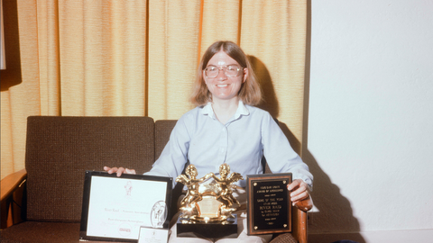

CONHEÇA MULHERES QUE IMPACTARAM O MUNDO DA TECNOLOGIA.
Há várias mulheres que ganharam destaque ao longo da história da tecnologia, seja na criação de um algoritmo,uma linguagem ou de um game clássico! Ter referências é algo muito importante para servir de inspiração ao longo da carreira. Por isso, Trouxemos alguns nomes fundamentais de mulheres que deixaram sua marca.
A história do mundo foi contada pelos homens. Basta lembrar quantas inventoras, artistas ou economistas você conhece. Mas isso nunca significou que as mulheres não deram importantes contribuições a todos os campos do conhecimento, quer dizer apenas que quem contava História nunca se preocupou em mostrar isso. Muitos conhecem Alan Turing, pioneiro da computação, mas quantos sabem que o primeiro programa da história foi idealizado por uma mulher? Ela atende por Ada Lovelace e é a primeira programadora da história. E agora você pode conhecer mais sobre ela e outras mulheres que a sucederam.
ADA LOVELACE (1815-1852)
a primeira programadora da história

Considerada a mãe da Tecnologia, a famosa condessa de Lovelace, Augusta Ada King, foi quem de fato teve a ideia do primeiro programa computacional. Em meados do século XIX, a famosa Ada Lovelace, analisava e traduzia diversos materiais dos matemáticos contemporâneos.
Como resultado, isso ajudou para que o primeiro algoritmo do mundo fosse desenvolvido. No entanto, nessa época, Lovelace não tinha à sua disposição máquinas que fossem capazes de testar esses códigos e provar que a sua lógica estava correta.
A boa notícia é que a descoberta de Ada Lovelace foi testada e comprovada anos depois de sua morte, quando já existiam computadores com a capacidade de processar esse tipo de algoritmo. É por isso que atualmente ela é considerada a mãe da computação e, inclusive, existe um prêmio em seu nome destinado às pessoas que desenvolvem inovações nessa área.
GRACE HOPPER (1906-1992)
Criadora da linguagem de programação de alto nível FLOW-MATIC — base para a criação do COBOL

Você já parou para pensar de onde surgiu o termo “bug” para se referir a problemas nos sistemas computacionais? Ao que tudo indica, ele passou a ser usado depois que Grace Hopper solucionou um erro de processamento de dados ao retirar um inseto (chamado de “bug” na língua inglesa) de dentro de uma máquina.
Mas, claro, não foi apenas essa a sua contribuição. Hopper foi a primeira mulher a ter um PhD em Matemática na universidade de Yale. Trabalhou também na área da tecnologia dentro da Marinha dos Estados Unidos.
Além disso, foi uma das idealizadoras de uma das linguagens de programação mais utilizadas para banco de dados de negócios, a COBOL. Contribuiu também para a criação do primeiro computador comercializado nos Estados Unidos, o UNIVAC.
CAROL SHAW (1955)
A primeira mulher Desenvolvedora de Jogos Eletrônicos no Mundo

Se você gosta ou é um amante de videogames, vai adorar conhecer a história de Carol.
Nascida na região do Vale do Silício, no ano de 1955, ela é considerada a primeira mulher que começou a trabalhar com o desenvolvimento de jogos digitais.
Shaw criou softwares para games e consoles, sendo pioneira na geração procedural de conteúdo, que nada mais é que o aumento gradual da dificuldade nos níveis do jogo. Em várias de suas obras, uma fase era totalmente diferente da outra, conceito utilizado até hoje nos maiores títulos de jogos.
Com isso, a engenheira da computação foi uma das primeiras colaboradoras da Atari, trabalhando também em empresas como a Activision.
HEDY LAMARR (1914-2000)
Criadora do sistema de comunicação sem fio
Das dezenas de filmes protagonizados por Hedy Lamarr, estrela do cinema hollywoodiano nos anos 1940, nenhum teve enredo tão cativante quanto a vida da própria atriz.
Chamada de a “Mãe do Wifi”, ficou conhecida por seu talento nas telas de cinema, chegando a ser chamada de a mulher mais linda do mundo. Porém, muitos não sabem que ela também foi pesquisadora, com grande interesse em matemática e uma inventora. Ela foi responsável pela criação do que hoje conhecemos como “salto de frequência”, um processo que envia sinais de rádio a partir de diferentes canais de frequência.
Durante a Segunda Guerra Mundial trabalhou em pesquisa para as Forças Armadas dos Estados Unidos possibilitando avanços na área das comunicações móveis. A idéia era emitir sinais de rádio para torpedos submarinos sem serem detectados pelos inimigos.
E graças a uma ideia, hoje em dia somos capazes de usar o Wi-Fi e Bluetooth.
MARY KENNETH KELLER (1913-1985)
A primeira mulher da história a receber um doutorado em Ciências da Computação
Religiosa e educadora, foi pioneira na ciência da computação, sendo mesmo a primeira pessoa, ao lado de Irving Tang, a doutorar-se na área de ciências da computação.
Enxergou desde cedo o potencial dos computadores como uma ferramenta educacional e voltada para o desenvolvimento humano, seja por meio de um maior acesso à informação ou simplesmente como suporte na sala de aula.
Mary Kenneth Keller escreveu quatro livros sobre computação e programação, e as obras são, até hoje, uma referência. Ela também foi uma das primeiras vozes pela inclusão das mulheres no ramo da informática. Hoje, batiza o Centro de Ciências da Computação da universidade onde atuou por 20 anos, além de ter uma bolsa de estudos na área que também leva o seu nome.